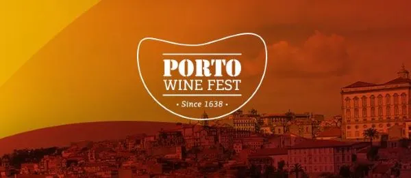
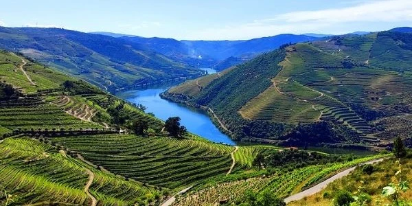

Welcome to Porto Chamber of Commerce Website
Current Event - The Douro and Porto Wine Festival
The Douro & Porto Wine Festival celebrates Music, Gastronomy and Wine, in one of the most idyllic settings in the world, attracting new audiences to the Douro region. With an international class line-up, several stages, attractions and sensory experiences, always washed down by the best nectars in the world: Douro wines.
The Douro & Porto Wine Festival is in the heart of one of the best wine regions in the world. During the two days you can enjoy and toast with a generous selection of producers and labels, making your experience in Lamego even more unforgettable. Meet the already confirmed producers. In its spaces, inside the venue, you can consume it in a bottle and glass or choose to take it home.
Weather
Today's Weather
Porto, Portugal